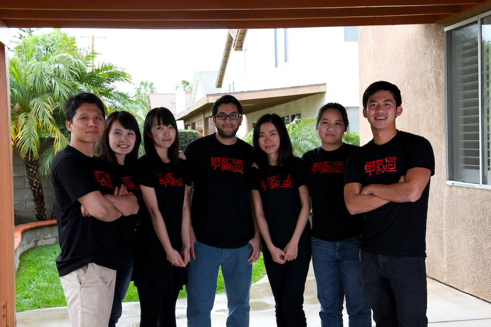

Because every little effort counts.
OneWay is an everyday philanthropy campaign initiated by a few Chinese students overseas.
We hope that young people overseas will support philanthropic causes in China through positive actions.
Because every little effort counts.
I grew up in the cities, so the experience as a volunteer teacher in rural China has a lifetime impact on me. During my six visits to rural China, not only did I experience the challenges of rural lifestyle and the hardships of kids going to school, but also I realized how incapable I was to offer my limited help. Having lived in the US for almost six years, I can never forget those things I observed in rural China and always wanted to do something.
－Zhang Jiangyang
From rescuing homeless cats and organizing animal welfare educational events, to volunteer teaching in rural schools, to currently learning and practicing conservation education, I've always been hoping that the future generations of us and our fellow creatures will have a better living environment. The world is not perfect, and we all sometimes feel small and insignificant. However, if more people are willing to turn compassion into action, together we probably can bring positive changes to the world.
－Yao Lili
Most people do things for a proper reason, but I have always been motivated by sudden moments. I feel uncomfortable when I saw a photograph of starving kids waiting for food. I never hesitate to devote myself even if the things will only bring about subtle changes. Just like being part of OneWay, every little effort counts.
－Zhang Chenchen
When you have brave ideas, act while you can.
Though everybody participates，
the actual donation will be made by participating companies.
We do NOT ask for your donation.
Instead, we want everybody to participate through your own actions.
The "Free Lunch for Children" campaign is the exclusive charity partner of OneWay.
Free Lunch for Children, founded under China Social Welfare foundation, was initiated by Mr. Deng Fei, together with more than five hundred journalists from leading Chinese press. This campaign encourages people to donate 50 cents everyday to provide a free lunch for children living in impoverished rural areas. Since the official launch in April 2011, “Free Lunch for Children” campaign has received great support from the society. As of December 2013, it has raised more than 70 million RMB, which is 11.4 million USD. More than 77000 children from 350 schools in impoverished areas no longer suffer from hunger. Inspired by this campaign, the State Council started the implementation of nutrition improvement program for rural students during compulsory education, which substantially improved nutritional status of children in rural regions in China.

"Never doubt that a small group of thoughtful, committed citizens can change the world. Indeed, it is the only thing that ever has."
The key concept of everyday philanthropy is to involve as many people as possible. There are 3 ways to join us:

Like or share OneWay on social media (WeChat, Weibo, Renren, Facebook).

＃Cook a meal ＃Workout for 30 min
＃Become a volunteer

Record something positive in your life
with a 1 min video.
If you are a cooking enthusiast, gym rat, volunteer lover,
Take a photo of your postive actions,
use Weibo #我的正能量瞬间 and @单行道微公益 to tell us！
Use your creativity, record something positve in your life with a 1 minute video.
Suggestions
1) Length not exceeding 1 minute.
2) Begin your video with a self introduction: "Hi, my name is XXX, I'm a student/graduate of XXX University."
3) End your video with "This is how I support OneWay, and you?"
4) Everything else is up to you! Be creative!
Please email/share your video to contact@danxingdao.org with subject "My life in 1 minute."
In summer 2014, members of OneWay will bike across America, from San Francisco to Washington DC.
We plan to bike over 3,800 miles in about 50-60 days.
Q：I’m not a Chinese student overseas. Can I still join OneWay?
A: Absolutely. Although we publicize mainly on Chinese student overseas and young professionals, but we definitely welcome anybody to join us.
Q: you guarantee that every action I take will turn into free lunch for children?
A: We have signed donation agreement with participating companies. As a result, for every participant's action, the participarting company will donate the corresponding amount of free lunches to "Free lunch for Children" campaign.
Q: Why do you choose "Free lunch for children" campaign as partner? Would you make public where the donations eventually go?
A："Free Lunch For Children" campaign is one of the most influential charity in China with great transparency in its donations. We hope to raise awareness of philanthropy in China among student overseas and young professionals. There are many other outstanding charities in China as well, but "Free Lunch For Children" is a great example to start with. All donations can be check on the official website of "Free Lunch For Children". Each Free Lunch school is required to open up a sina Weibo account and post their detailed accounting on their Weibo account.
Q: I am interested in joining the OneWay bike team, but won’t be able to do the whole trip. Can I still join you guys?
A: We welcome bikers to join us anytime along our journey. For this trip, we’ve chosen the route of Wester Express and part of TransAmerica Trail (starting from Pueblo, CO) from Adventure Cycling Route Network. Our average speed will be 60-70 miles with an elevation of 0-6000 feet per day, six days a week. We do want to remind you that bike touring requires certain physical strength and bear some risks. Please be well-prepared if you want to join the journey. For more detailed information, please email: contact@danxingdao.org。
Q: When does the whole campaign start and how long does it last?
A: The OneWay campaign will officially launch in May 2014 and will end in Sep 2014.
Q: I won’t be able to join the bike team, how can I support OneWay?
A: OneWay encourage everyone to start with something small. There are three ways to join us apart from the bike team: 1. The simplest way: “Like”/share OneWay on social network/media. 2. Take a photo of you cooking/working out/volunteering and @OneWay on Weibo. 3. Make a one-minute video to record your positive energy. (For more details please click here).
Because every little effort counts.